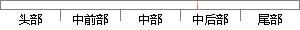

无论是域名的预处理或者恶意域名的检测，都需要对域名特征做提取的操作。
片段位置图

相似结果|
1
原句片段：无论是域名的预处理或者恶意域名的检测，都需要对域名特征做提取的操作。
相似片段 1：基于DNS请求周期的恶意域名检测算法,尤其涉及对于DNS流量周期性特征的提取和...排名前10万的域名进行匹配,去除有名域名数据,留下经过预处理的第二域名...
|
※ 片段修改建议 ※
近似词参考：- 或者：或 大概
- 恶意：歹意
- 需要：必要
- 特征：特点 特性
- 操作：操纵
系统自动生成语句：无论是域名的预处理或歹意域名的检测，都必要对域名特点做提取的操纵。
注：本片段修改建议为系统自动生成，仅供参考。